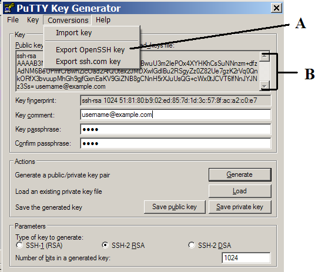

Setting up SSH
Chances are many of you won’t even care what this is about. But after
quite a few struggles of setting up CVS/SVN with SSH on various opensource servers, as well as configure
IDEA and Eclipse to use the private key, I think this is a topic that worth documenting,
so that I don’t have to repeat myself.
The detail is still to be updated, but here are some pointers:
- You need to download
puttygen.exeto generate the key pair,pageant.exeto enable key authentications,plink.exeto be used by SVN or CVS. - Use forward slashes when you set up
SVN_SSHorCVS_RSHenvironment variable to point to the path ofplink.exefor SVN and CVS, respectively. - Make sure that you put your user name as part of the CVS or SVN repository path, e.g. “
svn+ssh://wolfdancerrubyforge.org/var/svn/selenium/trunk@” - Make sure that you have pageant running and the keys loaded. (You can launch it by passing the path to the private key file).
- In the image attached below, the “Export OpenSSH key” menu, pointed out by “A” is what you need to generate the file to pass to your IDE like IDEA or Eclipse.
- In the image attached below, The text in the public key area, pointed out by “B”, is what you need to set up on the server.
- If you have access to the shell server, it should be copied to ~/.ssh/authorized_keys (you don’t need to change the permission)
- If you are using an open source server, it probably has a web page for you to copy your public key string to: sourceforge.net,
codehaus, ThoughtWorks GForge
- Connect to the server using plink to make sure it is working as well as confirming the server signature
